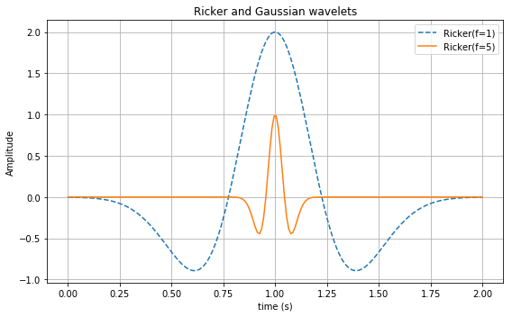

Wavelets¶
WaveFD defines classes to represent wavelets for the sources of finite difference modeling.
In [1]:
%matplotlib inline
import matplotlib.pyplot as plt
import numpy as np
from wavefd import RickerWavelet
The wavelet classes create objects that can be used to sample the wavelets.
In [2]:
wavelet = RickerWavelet(frequency=5)
The object can be evaluated as a function to get amplitude values given time.
In [3]:
print(wavelet(time=0))
print(wavelet(time=0.2))
-0.0009692515861872089
1.0
Notice that, by default, the largest amplitude of the wavelet is not
centered at time = 0. This can be controled by the delay parameter.
It defaults to 1/frequency.
In [4]:
RickerWavelet(frequency=5, delay=0)(time=0)
Out[4]:
1.0
You can also use numpy arrays to evaluate at multiple times.
In [5]:
times = np.linspace(0, 1, 20)
wavelet(times)
Out[5]:
array([-9.69251586e-04, -4.57448626e-02, -3.74473097e-01, 8.07966374e-02,
9.19826132e-01, -3.61938182e-01, -2.05472883e-01, -1.18650641e-02,
-1.34176376e-04, -3.38381912e-07, -2.00363137e-10, -2.85934617e-14,
-9.98558124e-19, -8.61692522e-24, -1.84952488e-29, -9.92031637e-36,
-1.33426591e-42, -4.51173615e-50, -3.84334508e-58, -8.26107874e-67])
Another option is to sample the wavelets with a given time interval
(dt). The default duration of the sampling is delay + 1/frequency,
which guarantees that the whole wavelet is sampled.
In [6]:
wavelet.sample(dt=0.01)
Out[6]:
array([-9.69251586e-04, -2.27660888e-03, -5.05650859e-03, -1.06104261e-02,
-2.10113422e-02, -3.92113167e-02, -6.88391793e-02, -1.13427193e-01,
-1.74860489e-01, -2.51097984e-01, -3.33690792e-01, -4.06195877e-01,
-4.44934522e-01, -4.23271408e-01, -3.19439956e-01, -1.26114512e-01,
1.41794200e-01, 4.45173637e-01, 7.27177260e-01, 9.27482597e-01,
1.00000000e+00, 9.27482597e-01, 7.27177260e-01, 4.45173637e-01,
1.41794200e-01, -1.26114512e-01, -3.19439956e-01, -4.23271408e-01,
-4.44934522e-01, -4.06195877e-01, -3.33690792e-01, -2.51097984e-01,
-1.74860489e-01, -1.13427193e-01, -6.88391793e-02, -3.92113167e-02,
-2.10113422e-02, -1.06104261e-02, -5.05650859e-03, -2.27660888e-03])
Let’s make a plot of the wavelet.
In [7]:
t = np.linspace(0, 2, 200)
plt.figure(figsize=(8, 5))
ax = plt.subplot(1, 1, 1)
ax.set_title('Ricker and Gaussian wavelets')
ax.plot(t, RickerWavelet(frequency=1, amplitude=2)(t), '--', label='Ricker(f=1)')
ax.plot(t, RickerWavelet(frequency=5, delay=1)(t), '-', label='Ricker(f=5)')
ax.grid()
ax.legend()
ax.set_ylabel('Amplitude')
ax.set_xlabel('time (s)')
plt.tight_layout()
